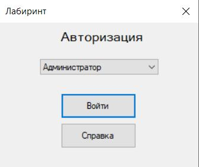
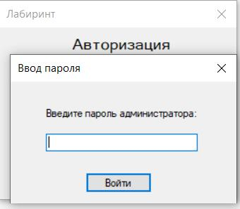
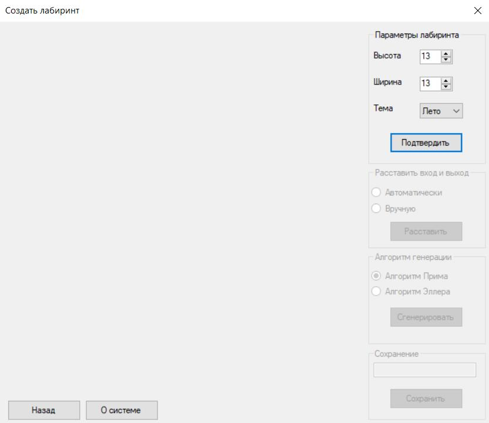
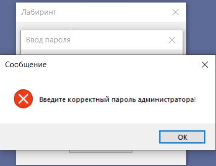
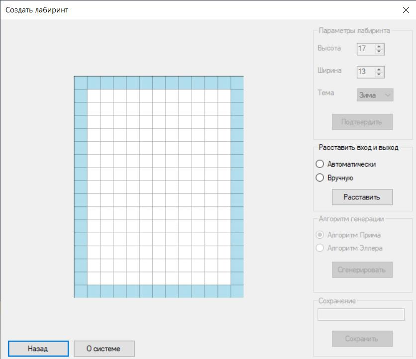
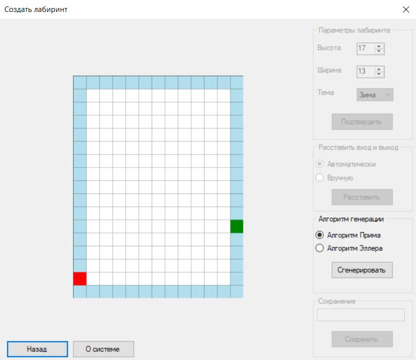
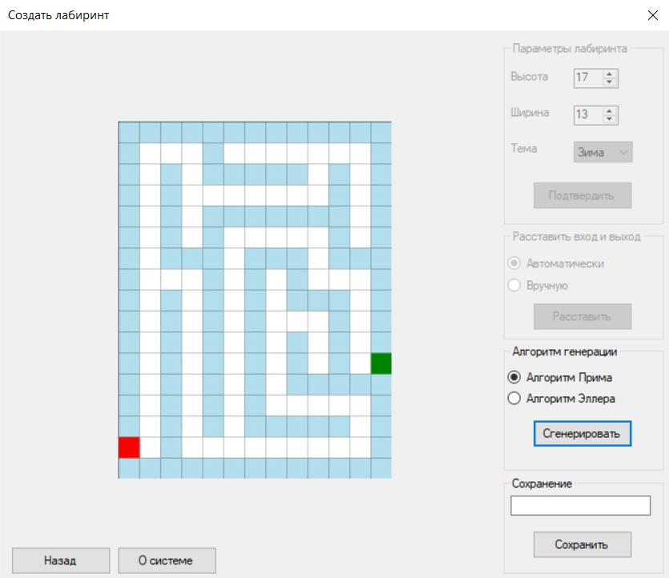
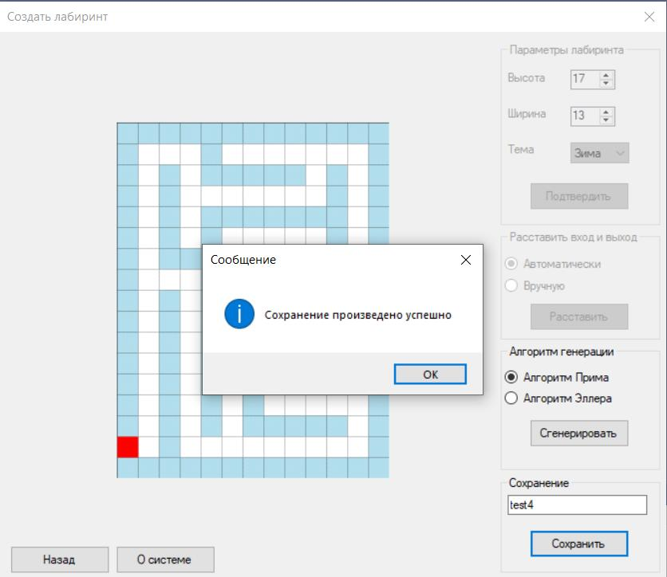
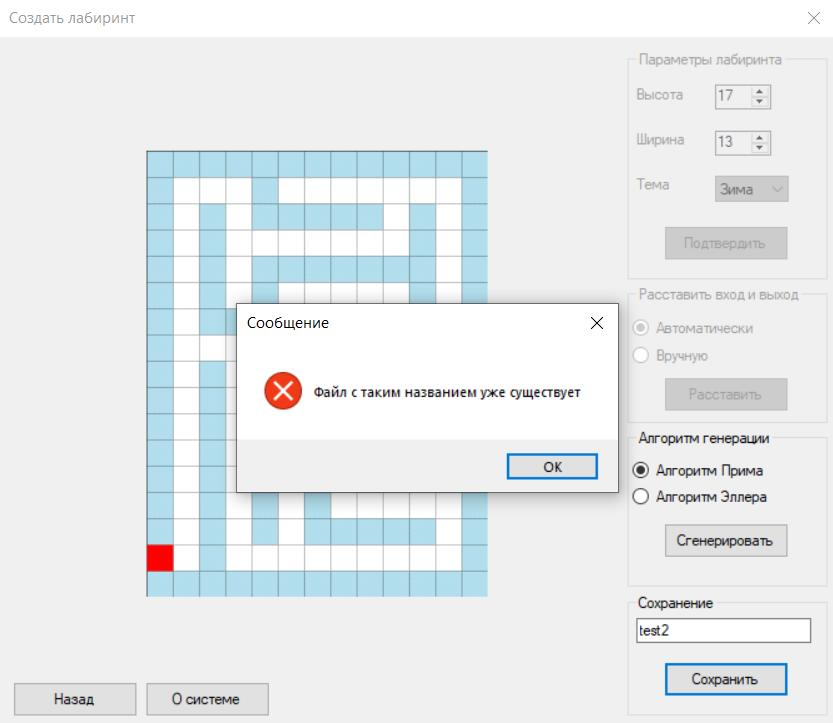

Справочная инфомация игры «Лабиринт». Режим администратора
Введение
Введение
Автоматизированная система «Лабиринт» предназначенную для генерации лабиринта и нахождения выхода из него. В системе предусмотрена работа в двух режимах: «Администратор» и «Пользователь(игрок)». Администратор может генерировать лабиринты, используя различные алгоритмы генерации. Игрок имеет возможность находить выход из лабиринта, выбирая алгоритм поиска пути и вид визуализации. И для администратора, и для пользователя предусмотрена визуализация работы программы.
Программа использует файловую систему для хранения лабиринта и его загрузки. Программная система совместима с Windows 7/8 и выше.
Вернуться наверх
1. Режим администратора
Администратор автоматизированной системы «Лабиринт» имеет возможность настраивать размеры лабиринта, выбирать тему, а также выбирать способ расстановки входа и выхода и выбирать алгоритм генерации лабиринта. Также ему доступно сохранение лабиринта в файл, просмотр справочной информации и информации о разработчиках.
Вернуться наверх
1.1 Авторизация в системе
После запуска системы откроется окно авторизации (рисунок 1). Для того, чтобы начать работу в системе в качестве администратора, пользователь должен из выпадающего списка выбрать роль "Администратор" и нажать кнопку "Войти" (рисунок 1). После этого в появившемся окне "Ввод пароля" ему необходимо указать определенный пароль и нажать кнопку «Войти» (рисунок 2). Установленный пароль для администратора «admin». При успешном входе в систему, открывается окно для генерации лабиринта, которое представлено на рисунке 3. Для просмотра справочной информации, необходимо нажать на кнопку «О системе», система откроект html страницу в установленном браузере. Для того, чтобы вернуться на форму авторизации и завершить работу в роли администратора, пользователю необходимо нажать на кнопку "Назад".

Рисунок 1 – Форма авторизации

Рисунок 2 – Окно ввода пароля

Рисунок 3 – Форма генерации лабиринта
Если пароль администратора был указан некорректно, то при попытке входа появляется соответствующее сообщение (рисунок 4)

Рисунок 4 – Ошибка при некорректном вводе пароля
Вернуться наверх
1.2 Настройка параметров лабиринта
Для того, чтобы задать размеры лабиринта, необходимо с помощью кнопок переключения выбрать высоту и ширину, либо можно оставить значения, установленные по умолчанию. Затем администратор может выбрать тему лабиринта или оставить тему, установленную по умолчанию. Для выбора доступны 4 темы: "Зима", "Весна", "Лето" и "Осень". После того, как все параметры будут заданы, администратору необходимо нажать кнопку "Подтвердить". В следствии этого создатся шаблон лабиринта с заданными параметрами (рисунок 5).

Рисунок 5 – Форма генерации лабиринта с созданным шаблоном
После создания шаблона лабиринта администратору становится доступен следующий шаг - выбор способа расстановки входа и выхода. Администратор может расставить вход и выход вручную, установив флаг у соответствующего способа, после чего ему нужно на периметре лабиринта отметить вход и выход. Он не может задать точку входа/выхода на самом лабиринте и в углах. Кроме того, администратору доступна автоматическая расстановка входа и выхода. Для этого ему нужно установить флаг у соответствующего способа, вход и выход расставляются автоматически (рисунок 6).

Рисунок 6 – Форма генерации лабиринта с установленными входом и выходом
Затем администратор может перейти к следующему шагу - выбрать алгоритм генерации. Для выбора доступны два алгоритма "Алгоритм Прима" и "Алгоритм Эллера". При нажатии на кнопку "Сгенерировать", лабиринт генерируется по выбранному алгоритму (рисунок 7).

Рисунок 7 – Форма генерации лабиринта со сгенерированным лабиринтом
Администратору доступно сохранение сгенерированного лабиринта, для этого в разделе "Сохранение" ему необходимо указать название лабиринта и нажать на кнопку "Сохранить". После этого лабиринт сохраняется в файл и появляется соответствующее сообщение (рисунок 8). Если было указано название уже существующего лабиринта, то при попытке сохранить лабиринт, появляется сообщение об ошибке (рисунок 9).

Рисунок 8 – Форма генерации лабиринта после его сохранения

Рисунок 9 – Форма генерации лабиринта после указания названия существующего лабиринта
Вернуться наверх